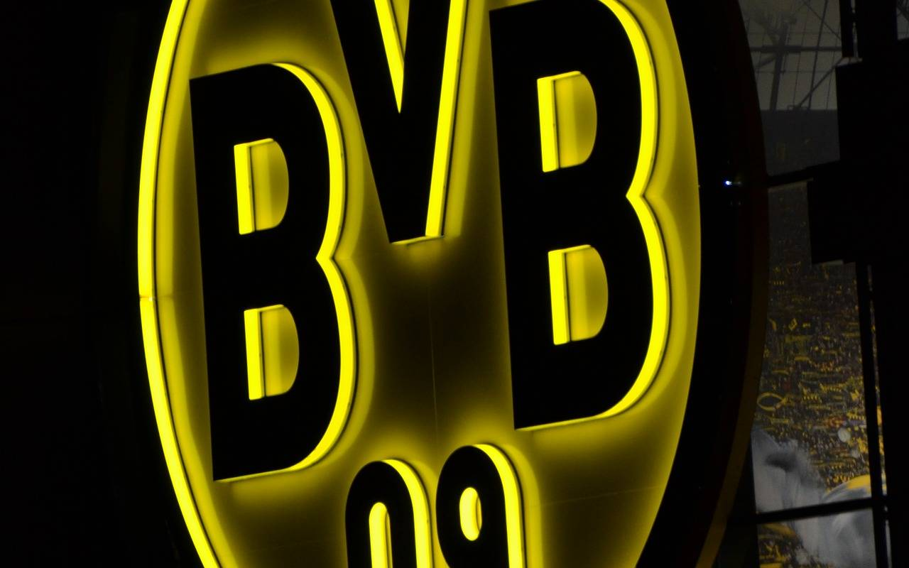

Borussia Dortmund ist ein Sportverein aus Dortmund. Er ist einer der erfolgreichsten Klubs Deutschlands, neben acht deutschen Meisterschaften und fünf DFB-Pokalsiegen gewann der BVB 1966 den Europapokal der Pokalsieger und 1997 die Champions League sowie im selben Jahr den Weltpokal. Die Manschaft spielt in der Bundesliga und belegt in der ewigen Tabelle (hinter Bayern) den zweiten Platz.
Der Kader des Vereins ist 604 Millionen Euro wert, worunter auch der Topspieler Erling Haaland spielt (Marktwert 150 Millionen Euro).
Bvb wurde 1909 mit 18 Leuten gegründet und spielten als erstes in der C-Klase und stiegen über die Jahre in die Bundesliga auf.
Die Anhängerschaft von Borussia Dortmund zählt zu den größten Fangemeinden in Europa. Weltweit gibt es über 500 offizielle Fanklubs mit über 25.000 Mitgliedern.
Mit 81.365 Zuschauerplätzen ist es das größte Fußballstadion Deutschlands sowie das zweitgrößte Vereinsstadion Europas hinter dem Camp Nou des FC Barcelona.